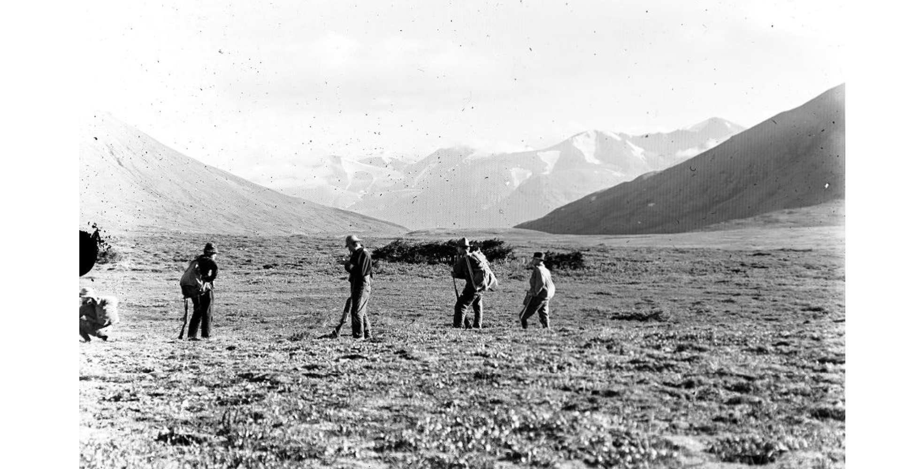

Click on the images below to explore the A.I. interpretations of Wernstedt's photography. What do the original and recreated images say in conversation with each other? How do they each reflect the archive’s relation to history’s shifting narratives? Does A.I. have a role in archival studies? Please consider these questions as you view the collection.